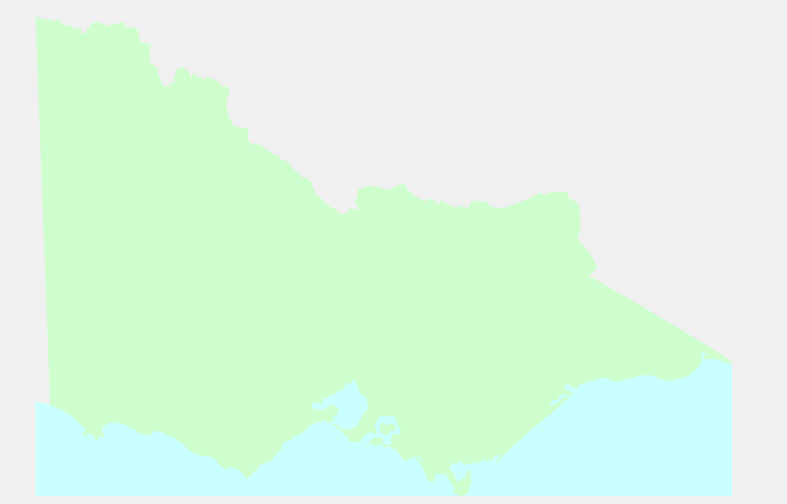

The route will follow the standard rail line from Souther Cross station, to Ballarat Station, to Maryborough station, to Castlemaine Station and then back to Southern Cross.
It will require the Castlemaine to Maryborough rail line to be re-instated. But in the interim the train could just stop Maryborough and return to Southern Cross.
Stops starting from Couther Cross
This is just a suggestion to start with. However other towns along the route may wish to be included.
Until the Castlemaine to Maryborough line is re-instated
- Southern Cross
- Bacchus Marsh (Lerderderg Gorge)
- Ballarat
- Creswick
- Clunes
- Talbot
- Maryborough
- Talbot
- Clunes
- Creswick
- Ballarat
- Bacchus Marsh (Lerderderg Gorge)
- Southern Cross
After the Castlemaine to Maryborough line is re-instated
- Southern Cross
- Bacchus Marsh (Lerderderg Gorge)
- Ballarat
- Creswick
- Clunes
- Talbot
- Maryborough
- Castlemaine
- Kyneton
- Woodend
- Southern Cross
Frequency
Perhaps once per week or fortnight as a trial for a while.
Castlemaine to Maryborough Line
The rail trail is already under construction so there is no sense in tearing that up if it can be avoided. So turn it into a duel working rail line and rail trail.
The feasbility study for re-instatement of the rail line found that it was not viable, however that was based on local commuters. A feasibility study that was based a broad plan for goldfields tourism, and primarily tourist traffic may well give quite different results.
That could be combined with the feasbility of rail freight for farm produce etc. along that alignment.
Immersive and proactive tourism plan
The idea would be to have an immersive and proactive approach to tourism. So it would not be simply dropping them at stations from the steam service and then forgetting them. Each station would need some sort of visistor center that is more than just sterile corporate affair.
- They would need to be mini museums.
- Staff would greet the visitors on the platforms and welcome them to the visitor center.
- The vistor centers would be a central location for vistors to sign up for various tours and experiences, and the place where they meet up with any guides and hosts etc.
- Stage coaches, wagons, buggies, or tour buses would be available at the stations when the train arrives to ferry the visitors to the center of town or any historic sites etc.
Visitors will need to feel as if they are important and feel some good old fashioned Australian rural hospitality.